Now I train our own UNet model. The data is MNIST. Initially, I train a one step denoiser. After that a flow matching model. Also additional time and class inputs.
Project 3 · Part B
Training a UNet on MNIST
Now I train our own UNet model. The data is MNIST. Initially, I train a one step denoiser. After that a flow matching model. Also additional time and class inputs.
Part 1.2
We noise clean digits:
z = x + σ ε, ε ~ N(0, I)
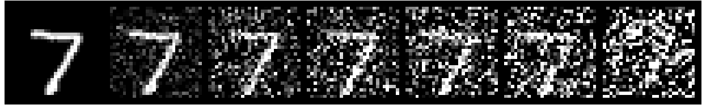
σ = 0.0, 0.2, 0.4, 0.5, 0.6, 0.8, 1.0.
Part 1.2.1
Input: z with σ = 0.5. Target: the clean x. L2 loss. D = 128, batch 256. Adam, learning rate 1e-4. 5 epochs. Fresh noise every batch.
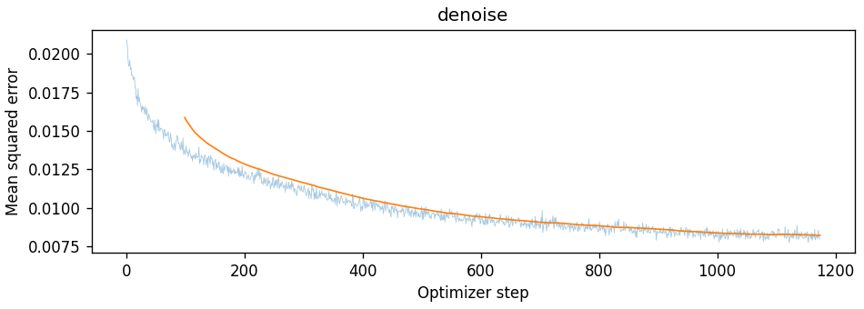
Training loss, σ = 0.5. Blue: every step. Orange: 100-step average.
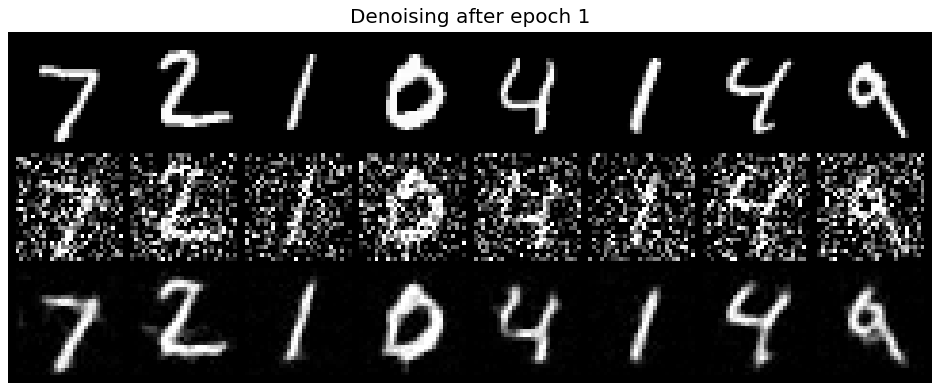
After epoch 1
Rows: clean, noisy, denoised.
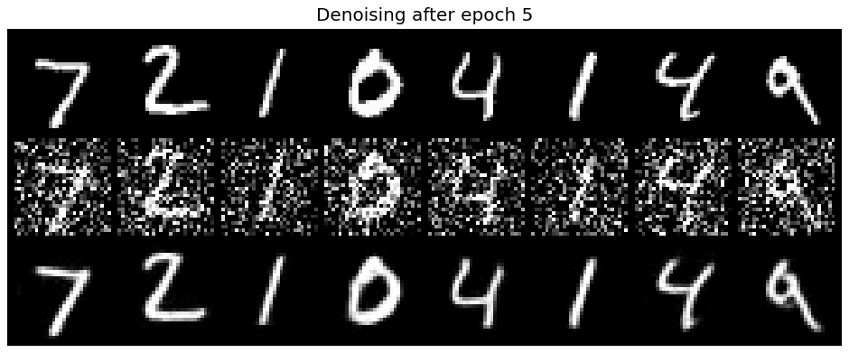
After epoch 5
Same digits. Cleaner strokes.
Part 1.2.2
Trained only on σ = 0.5. What about other levels? Up to 0.6 it works. Higher σ adds fake strokes.
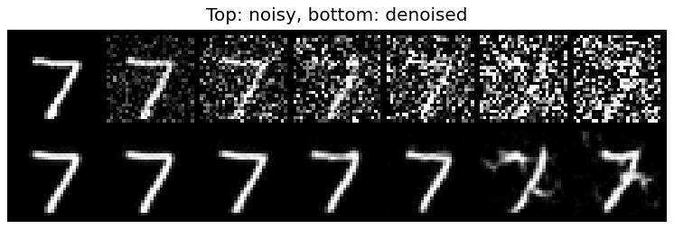
Top: noisy. Bottom: denoised. σ values as in 1.2.
Part 1.2.3
Input: pure noise only. Target: a clean digit. Same training as before.
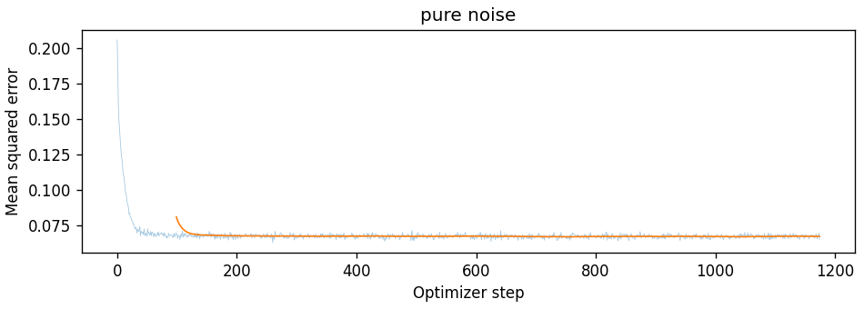
Loss with pure noise input.
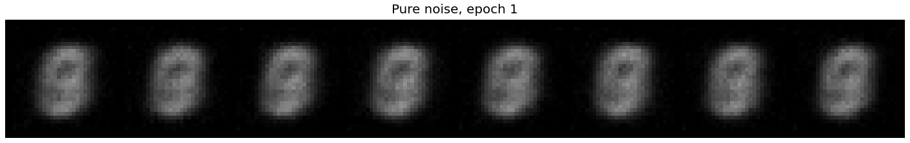
After epoch 1
8 different noise inputs.
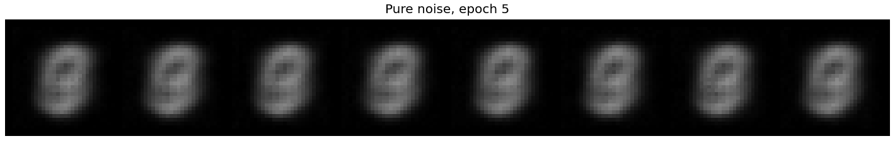
After epoch 5
8 different noise inputs.
Every output is the same blob. It looks like all digits averaged. Why? Noise holds no digit information. MSE then favors the average. That is the training centroid. The loss flattens almost instantly. So one step can’t generate. We need flow matching.
Parts 2.1 to 2.3
Now we denoise in steps. Like in Part A.
xt = (1 − t) x0 + t x1
The UNet predicts x1 − x0. Two FC blocks inject t. D = 64, batch 64. Adam, learning rate 1e-2. Exponential decay, γ = 0.11/10. 10 epochs. Sampling: 50 Euler steps.
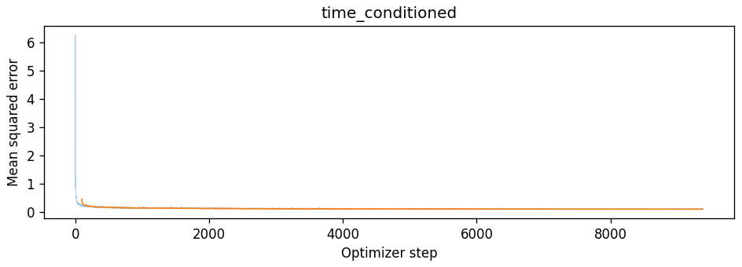
Time-conditioned training loss.
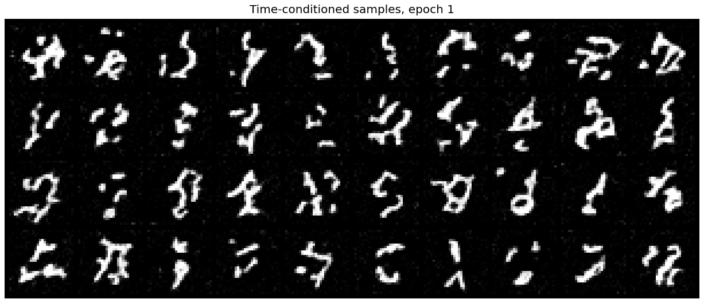
Epoch 1
Mostly squiggles.
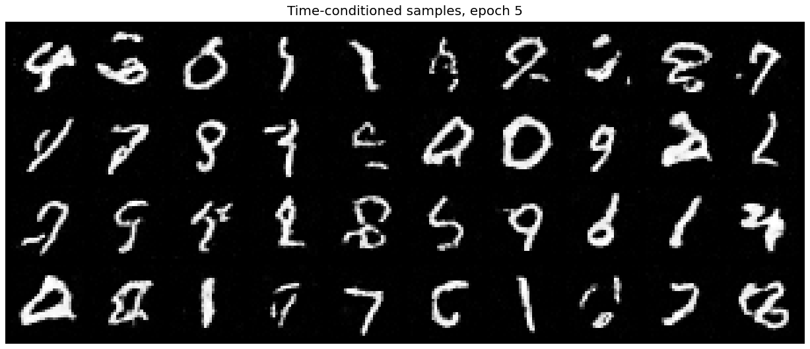
Epoch 5
Most are digits now.
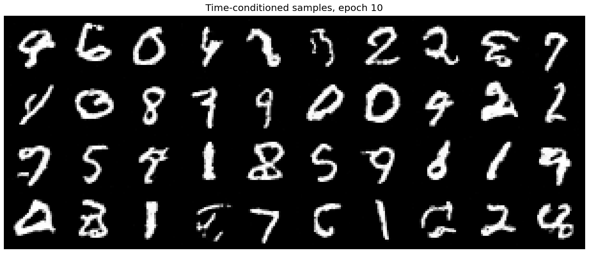
Epoch 10
Cleaner, but some aren’t digits.
Parts 2.4 to 2.6
I also give the class. One-hot, through two FC blocks. c1 · unflatten + t1. c2 · up1 + t2. Class dropout: 10%. This enables CFG. Same training settings.
300 Euler steps. CFG with γ = 5:
u = uuncond + γ (ucond − uuncond)
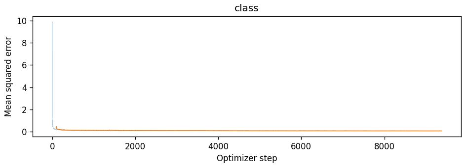
Class-conditioned training loss.
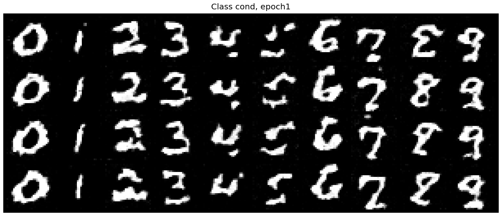
Epoch 1
Each column is one digit. 4 samples each. 4s and 5s look messy.
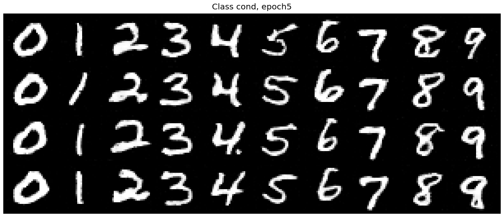
Epoch 5
Every digit looks right.
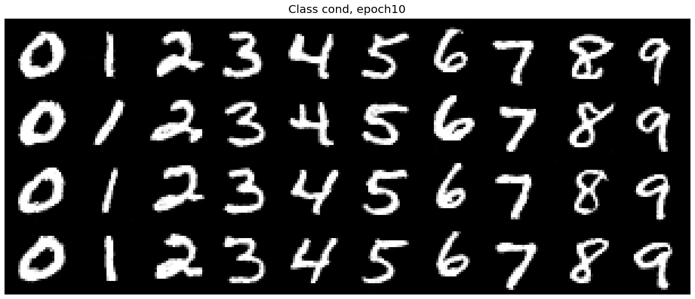
Epoch 10
Clean digits, different styles.
Part 2.6
Can we drop the scheduler? Scheduled: 1e-2 down to 1e-3. My fix: constant 1e-3. Everything else stayed the same. Results look just as good.
With scheduler
Decaying learning rate, epoch 10.
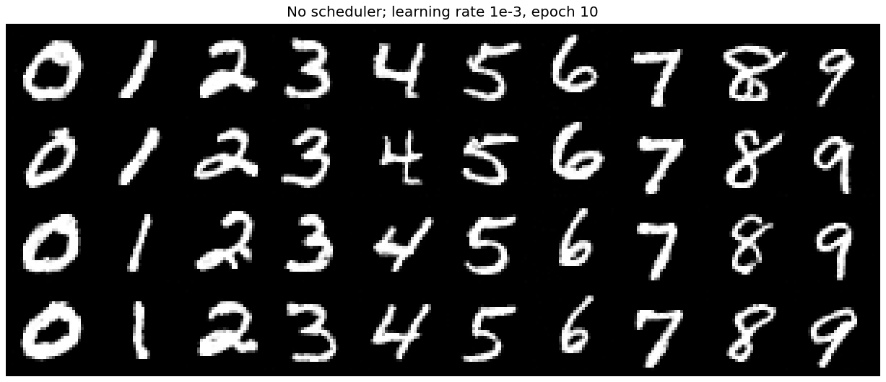
No scheduler
Constant 1e-3, epoch 10.
Loss with scheduler.
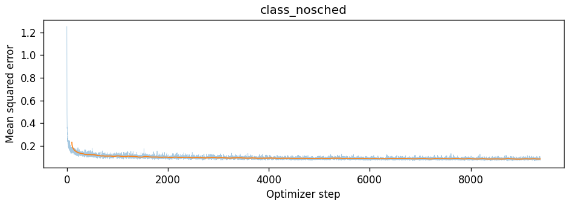
Loss without scheduler.